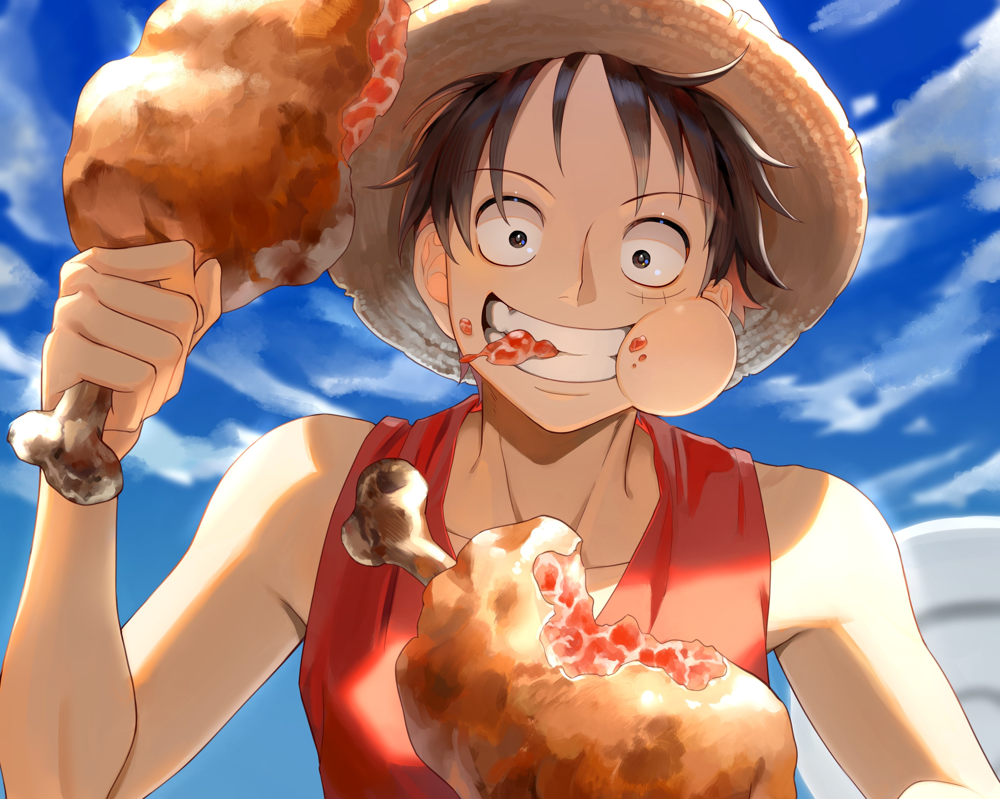

Monkey D. Luffy
Luffy, o carismático protagonista de "One Piece", é um intrépido pirata com o
objetivo de se tornar o Rei dos Piratas. Conhecido por sua personalidade
extrovertida, determinação inabalável e habilidades de borracha após
consumir a Fruta Gum-Gum. Sua jornada é marcada por amizades duradouras,
incríveis batalhas e a busca pelo One Piece, o tesouro lendário no Grand Line.
